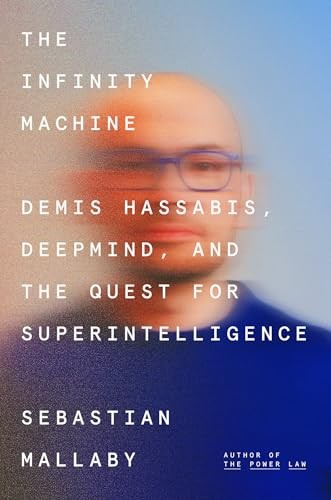

塞巴斯蒂安·马拉比（Sebastian Mallaby）是美国著名的金融历史学家与记者，现任职于美国外交关系委员会（Council on Foreign Relations），曾长期为《华盛顿邮报》和《经济学人》撰稿。他此前的代表作《对冲基金与创新资本主义的新范式》（More Money Than God，2010年）和《冒险家：风险投资与初创企业改变世界的故事》（The Power Law，2022年）均被公认为对冲基金与风险投资领域最权威的历史叙述。《无限机器》出版于2025年，由企鹅出版社发行，出版后即登上《纽约时报》畅销书榜，是迄今对德米斯·哈萨比斯（Demis Hassabis）与DeepMind最为深入的传记性记录。马拉比在写作过程中获得了哈萨比斯逾三十小时的独家访谈，并广泛接触了DeepMind的联合创始人、竞争对手以及学术界的批评者，使本书兼具内部视角与外部审视的双重深度。
全书以哈萨比斯的生命轨迹为主线：他是一名国际象棋神童，13岁时是英国排名最高的青少年棋手之一；剑桥大学计算机科学学士毕业后，他加入电子游戏公司，在22岁时主导开发了模拟游戏《主题公园》；随后转入神经科学研究，在伦敦大学学院获得神经科学博士学位，研究海马体与情节记忆的关系——正是这段跨学科的研究经历，使他形成了"理解智能必须从大脑结构出发"的核心信念。2010年，哈萨比斯与沙恩·勒格、穆斯塔法·苏莱曼共同创立DeepMind，以"到2030年实现超级智能"为使命宣言。2014年，谷歌以约6亿美元收购DeepMind，在硅谷引发震动。书中的叙事高潮之一是AlphaGo于2016年击败围棋世界冠军李世石的完整内幕，以及2020年AlphaFold在蛋白质结构预测领域取得的突破——后者使哈萨比斯于2024年荣获诺贝尔化学奖。马拉比也并未回避DeepMind内部对人工智能安全的深刻分歧，以及哈萨比斯与苏莱曼之间因理念差异导致的决裂。
《无限机器》出版后获得广泛好评。诺贝尔奖得主、"深度学习之父"杰弗里·辛顿（Geoffrey Hinton）——他本人既是DeepMind的支持者，也是AI存在性风险最知名的警告者——评价本书"对AI未来走向的呈现既准确又令人深思"。埃里克·托普尔（Eric Topol）在其医学AI领域的重量级Substack上写道，这本书"值得你花时间阅读，以理解AI的未来"，并特别赞赏马拉比对蛋白质折叠突破的清晰叙述。《科克斯书评》（Kirkus Reviews）将其列为2025年度最佳非虚构类图书提名，称马拉比"以外交关系委员会学者的严谨与讲故事者的天赋，完成了一部关于我们时代最重要技术革命的奠基性叙述"。
对于投资者与商业读者而言，《无限机器》的价值是多层次的。在直接商业层面，书中对DeepMind商业化路径——从游戏AI到医疗诊断再到科学发现——的完整记录，是理解AI产业竞争格局的第一手资料。在更宏观的层面，哈萨比斯的人生轨迹本身就是一个关于"跨学科禀赋如何在指数时代创造不对称优势"的活教材：他将棋手的计算直觉、神经科学家的生物灵感与工程师的执行力整合为一种独特的认知组合，而这种组合并非任何单一学科的训练所能培养。在一个AI正在重写几乎所有行业规则的时代，了解DeepMind的思想史，也是了解未来十年技术与商业变局的必要准备。